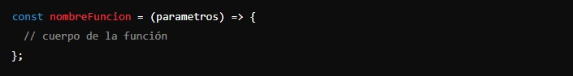
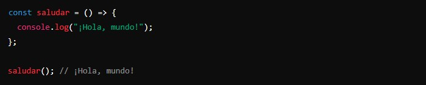
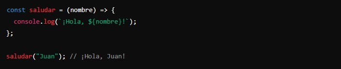
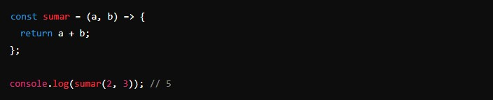
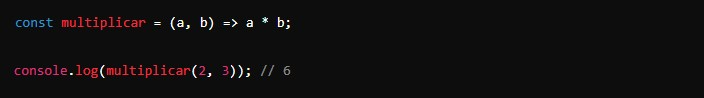
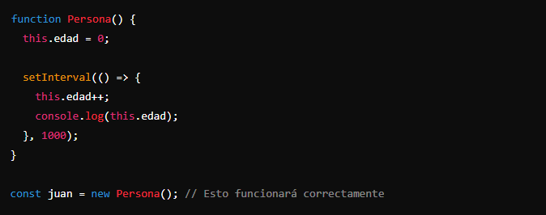
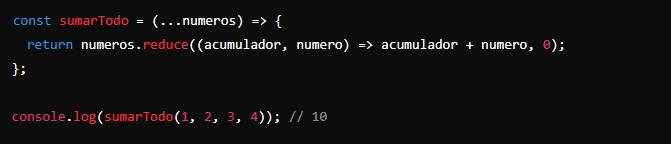
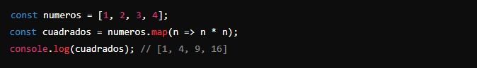
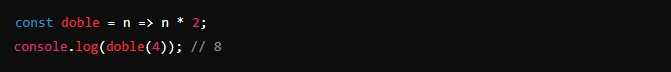

Las funciones de flecha son una manera más concisa y moderna de escribir funciones.
Es una forma compacta de definir una función en JavaScript. Se llama así porque usa la sintaxis => (flecha) para separar los parámetros de la función del cuerpo de la función.
La sintaxis básica de una función de flecha es la siguiente:
Ejemplos de funciones de flecha:
- Función simple sin parámetros: 
- Función con un parámetro: 
- Función con múltiples parámetros: 
- Función con retorno implícito:
Si el cuerpo de la función tiene una sola expresión, puedes omitir las llaves {} y la palabra clave return.
Diferencias entre funciones de flecha y funciones tradicionales:
- Sintaxis más concisa:
Las funciones de flecha suelen ser más cortas y fáciles de leer, especialmente cuando son funciones simples.
- No tienen su propio this:
Una de las diferencias más importantes es que las funciones de flecha no tienen su propio this. En lugar de eso, heredan this del contexto en el que fueron definidas.
En una función tradicional, this dentro de setInterval sería window (en el navegador), pero en una función de flecha, this se refiere a la instancia de Persona.
- No tienen argumentos:
Las funciones de flecha no tienen el objeto argumentos que existe en las funciones tradicionales. Si necesitas acceder a los argumentos, puedes usar el operador rest ....
Cuándo usar funciones de flecha:
- Callbacks: Las funciones de flecha son muy útiles para los callbacks (funciones que se pasan como argumentos a otras funciones) porque son más cortas y manejan this de manera predecible. 
- Funciones simples: Cuando tienes funciones pequeñas y simples, la sintaxis concisa de las funciones de flecha las hace más legibles. 
Sintaxis concisa: Las funciones de flecha son más cortas y fáciles de escribir.
Ámbito léxico de this: No tienen su propio this, lo que evita ciertos problemas con el contexto de this.
Sin argumentos: No tienen el objeto argumentos, pero puedes usar el operador rest ... para lograr un efecto similar.